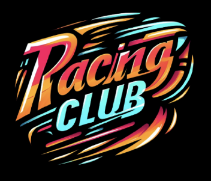
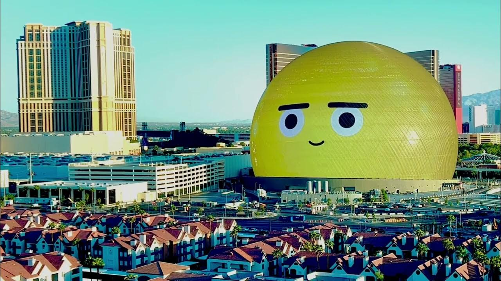
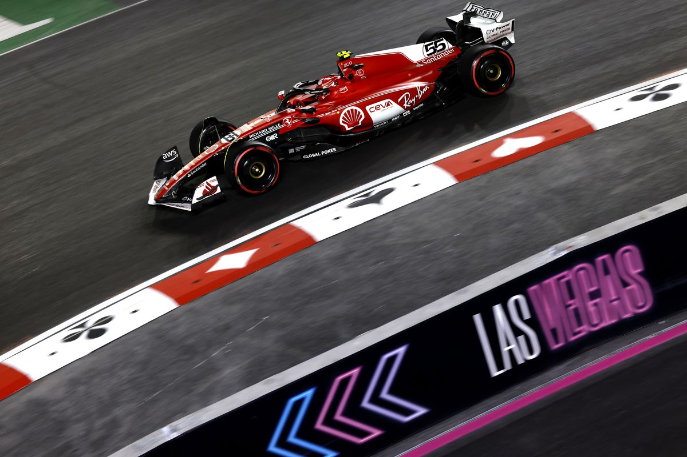

Grand Prix de Las Vegas, faste ou chaos

Article originel sur Racing Club Media
Ce week-end, la ville du jeu et des lumières s'est transformée en un spectacle de vrombissements et de pneus hurlants avec la tenue du Grand Prix de Formule 1 de Las Vegas. Cependant, derrière le glamour et l'excitation, se cachent certains défauts qui ont attiré l'attention des passionnés de sport automobile.
Le Grand Prix de Las Vegas a attiré l'attention mondiale, les rues de la ville ont été transformées en un circuit urbain parcourant les passages les plus iconiques comme le célèbre Las Vegas Strip ou encore la MSG Sphère qui ne manqueront d'impressionner aussi bien les pilotes que les 170.000 spectateurs attendus sur place.
Ce public, composé de passionnés ainsi que de nombreuses célébrités, aura très probablement droit à un spectacle visuel époustouflant, avec des voitures rugissantes passant sous les néons de la ville.
On pourrait continuer de parler de ce spectacle visuel mais ce n'est pas réellement l'utilité du Grand Prix car, on rappelle que la Formule 1 est un sport et non pas un spectacle.


Alors on peut accepter quelques activités ou installations extérieures comme la chapelle, qui a d'ailleurs servi dès le début du week-end à l'occasion du mariage de Jacques Villeneuve et de Giulia Marra, qui se sont dit oui dans des circonstances qui étaient donc plus surprenantes.
La sphère sera également utilisée lors du Grand Prix pour diffuser différentes informations sur la course telle que le tour de la pole position en temps réel, le podium ou encore des cartes présentant les pilotes et leurs monoplaces.
Du contenu supplémentaire sur mesure sera dévoilé pendant la course elle-même, y compris la possibilité pour les fans de se voir sur la sphère. Tout cela semble être plutôt positif mais on va maintenant se pencher sur les points négatifs de ce Grand Prix qui ne sont pour la plupart pas négligeables.
Premièrement, Las Vegas se voulant exclusif et différent, le Grand Prix se déroulera le samedi soir (heure locale), ce qui signifie donc un réveil à 7h, dimanche matin, si vous ne voulez pas louper l'extinction des feux.
Mais le problème avec cette course en soirée, c'est l'histoire de température qui suit. En effet, on attend des températures entre 5 et 7°C dans l'air, et qui pourrait ne pas dépasser les 5°C au sol en fin de course, et quand on voit ce tracé qui compte des lignes droites allant jusqu'à 1,9km et pas plus de 14 virages, on s'imagine que la gestion des pneus sera un enjeu majeur de ce Grand Prix.
Ce qui inquiète également sur ce même sujet c'est la sortie des stands, celle-ci se situe en effet dans un virage serré et de nombreux fans ont exprimé leur inquiétude quant à la possibilité que certains pilotes pourraient réussir leur virage avec des pneus neufs.

Cela annonce donc la couleur de la course, et pour les spectateurs que ça n'effraie pas, une grève du personnel hôtelier est prévue pour toute la durée du week-end, en plus de l'annulation d'une des tribunes. Alors est-ce que le Grand Prix pourra outrepasser tous ces défauts et assurer une bonne course ?
Rendez-vous dimanche matin.